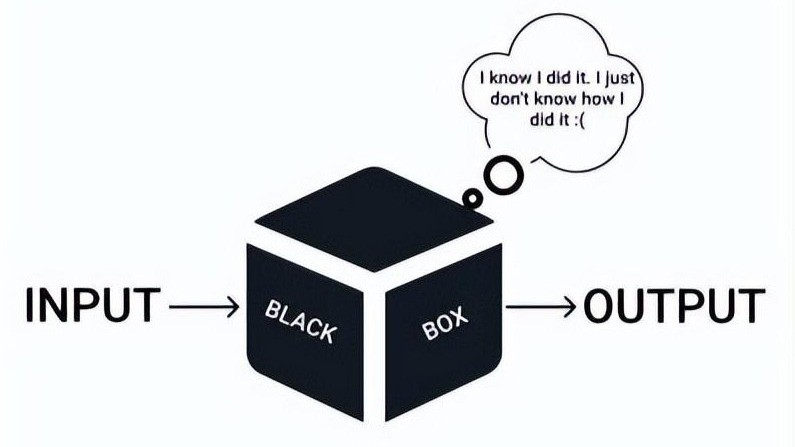

Galería Blackbox AI



Blackbox AI es una herramienta enfocada en programación, generación de código, búsqueda de soluciones y asistencia para desarrolladores de software.
Ir a Blackbox OficialGeneración de código
Asistente de programación
Productividad

Genera fragmentos de código rápidamente.
Encuentra soluciones para problemas de programación.
Ayuda a detectar y solucionar errores.
Mejora la productividad de los programadores.